Are you a boy or a girl?....Good, glad we got that out of the way.
Sounds easy, right?
Well, there are things you need to know first.
There is presently over 700 known species of Pokemon, you probably will not be catching them all.
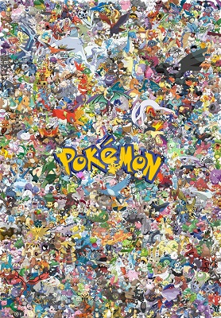
If you ever want to amount to anything, you need a hat.
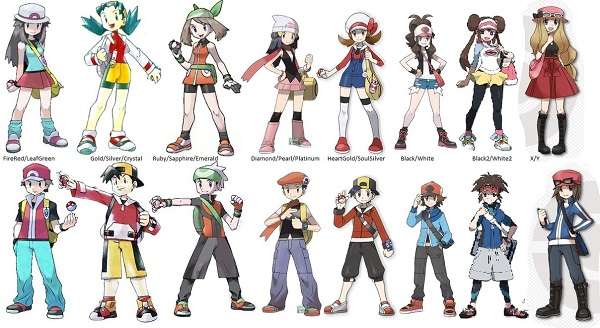
Chances are pretty good you do not have a daddy. Your mother can legally kick you out at age eleven. It is advised that you become a trainer around that time.
Don't worry school is only for people who can't train pokemon.
The easiest way to become a pokemon trainer is to live in a small town with a well known researcher working nearby.
If you cannot find a famous professor in your nobody town, don't worry they make housecalls.
Remember the professor always knows.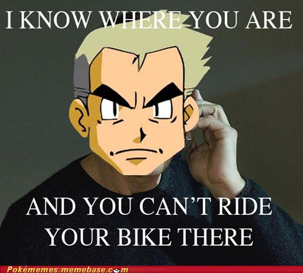
Okay, time to pick your first pokemon, assuming you followed the above instructions you will recieve a choice of three pokemon.
A grass type, a fire type, or a water type.
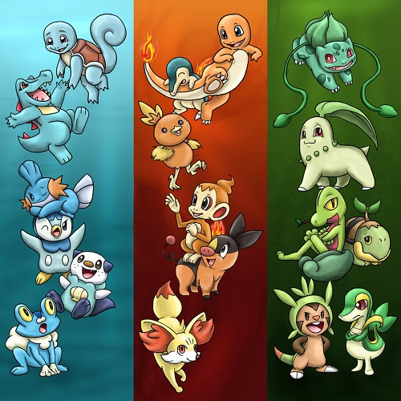
Of course no matter what you choose, your rival will just pick the one with the type advantage.
Oh, by the way you have a rival now.
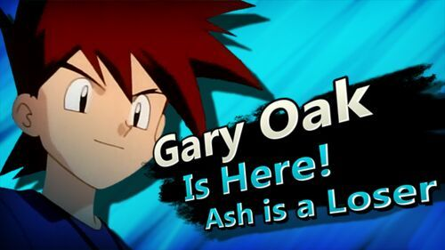
Now that you are a trainer you need to decide what kind of trainer you want to be.
Maybe you want to live peacefully with your pokemon.
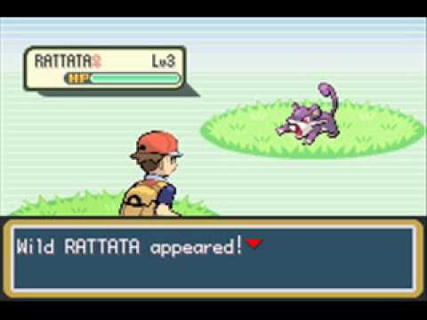
Just kidding! You can't even walk in grass without being attacked. Now is the time to learn about battling.
When your pokemon defeats another pokemon it will gain experience and eventually become stronger, possibly learning new moves.
Yes, it can learn moves other than tackle and growl.
Pokemon may learn up to four moves at a time.
An attack is more powerful when it is the same type as your pokemon, So try to have at least one of those.
When your pokemon runs out of energy it will faint. If this happens take it to a pokemon center to be healed.
Be sure to regularly vist a center to keep your pokemon in good health, otherwise you are a dick.
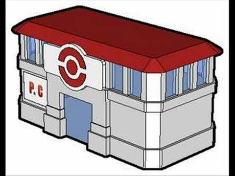
You may have noticed that other building nearby.
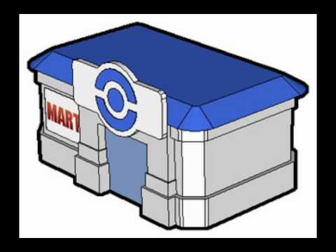
The pokemart carries many useful items for a trainer, such as potions, pokeballs, escape rope, and repels.
Though in recent years Pokemarts have started being integrated into pokemon centers, you better be thankful.
Now that you have spent all your money on pokeballs, I should teach you how to use them.
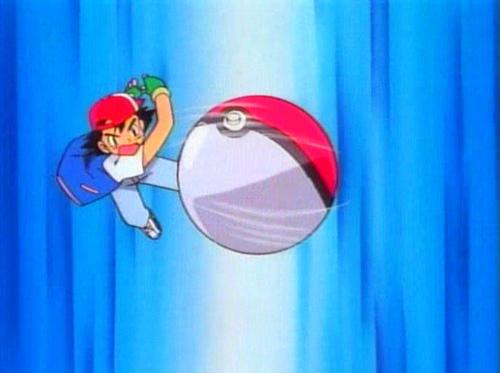
Just chuck'em at the pokemon you want to catch. Be warned that if you don't weaken it first it will probably break out.
There are a variety of pokeballs with different uses. Some are made from apricorns like the pokeballs of old.
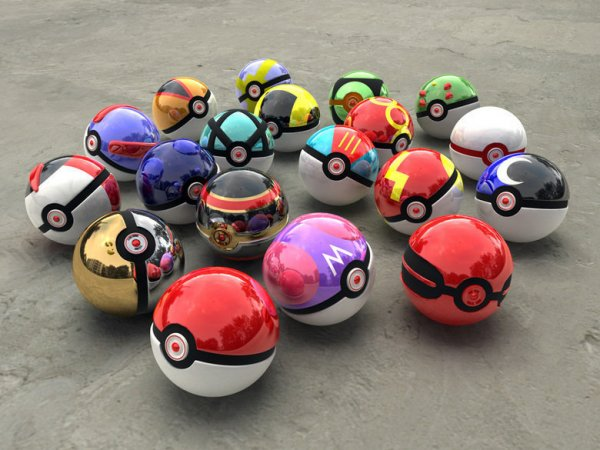
The master ball will catch a pokemon without fail. But acquiring one is like winning the lottery, literally.
Now you know the basics.........wait what do you mean you have no idea what types, abilities, and status conditions are? Fine, go here
Now that you have learned how pokemon operate, its time you apply this information.
For simplicity's sake, lets assume your journey's goal is the incredibly generic dream of becoming champion.
To do this you first need to collect 8 Badges from official pokemon gyms. You only need 8, don't bother visiting the less famous gyms.
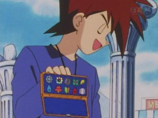
Each gym is run by a gym leader, a trainer of above average skill.
Since each specializes in a certain type, gym leaders typically use pokemon that all share an exploitable weakness.
Once you have proven your worth by defeating the leader, you will be awarded a gym badge.
Once you have collected 8 badges, you may enter the region's pokemon league. To get there you will have to traverse the perilous victory road.
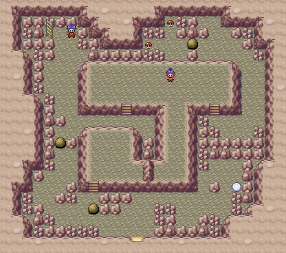
The league's main challenge is the Elite Four, 4 trainers who are pretty much just stronger gym leaders.
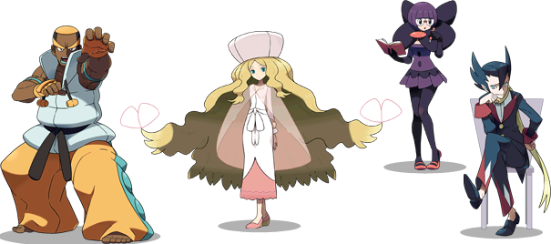
Your final challenge will be to defeat the current champion. This will be your hardest fight yet, since champions actually use more than one type of pokemon, unless they have a dragon fetish.
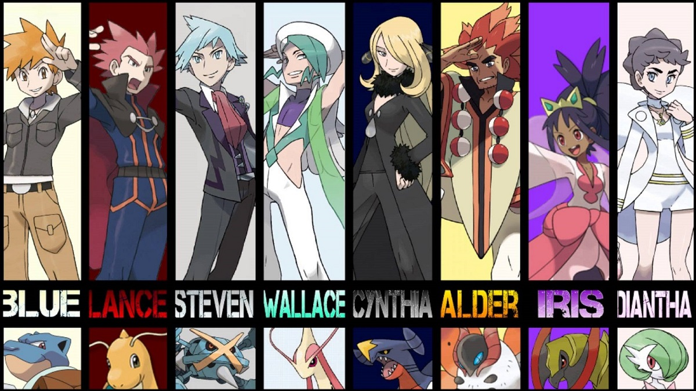
....Wait, you actually won? Well, congrats! Now your name will forever be written in the hall of fame.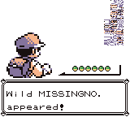
Might as well go home now and rest up, you've earned it.
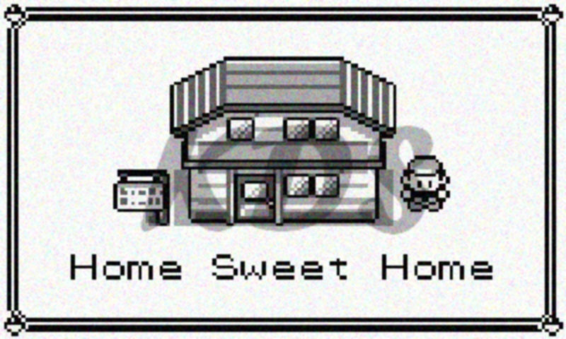